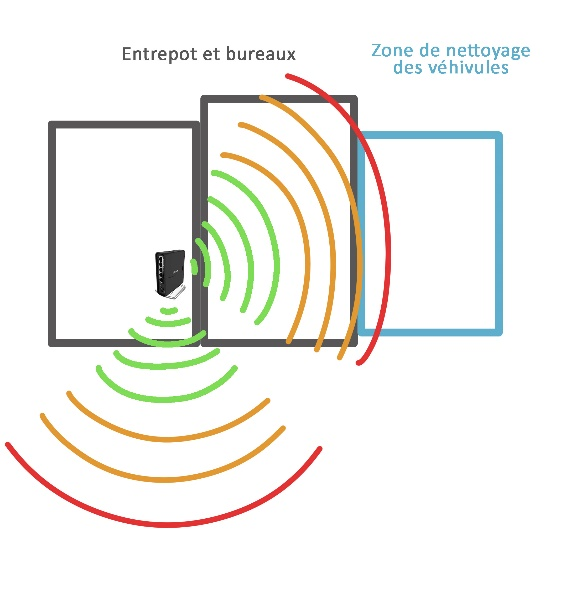
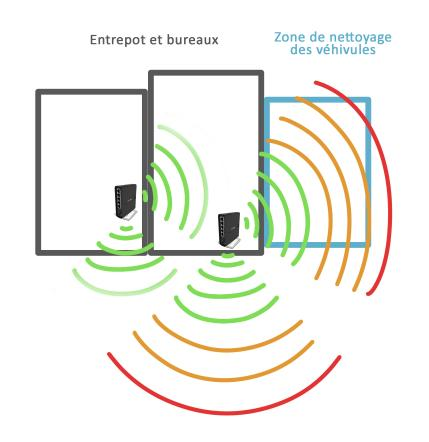
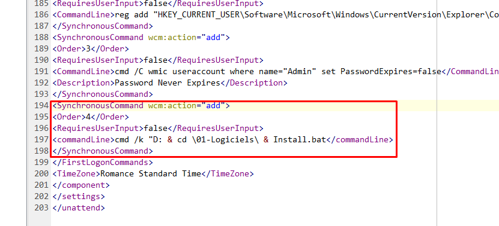
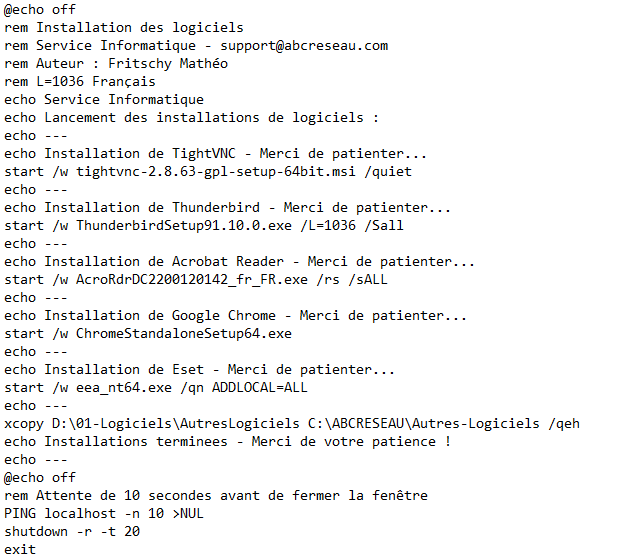
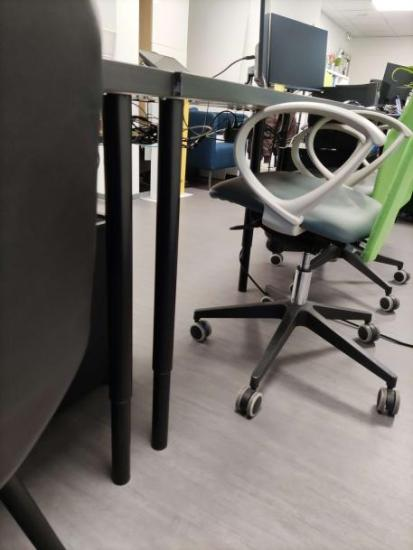
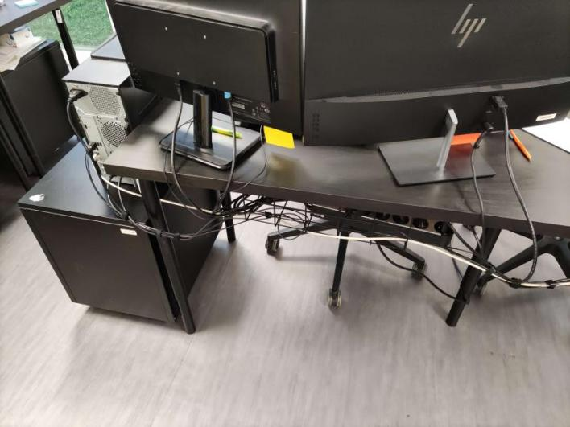
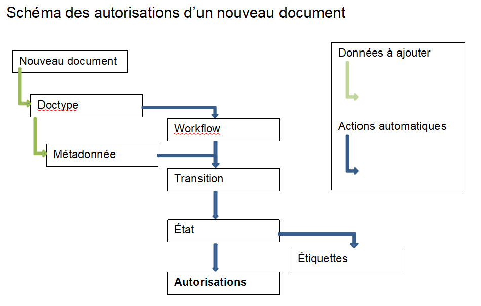

Mes études et moi
Je m’appelle Mathéo Fritschy et je suis actuellement étudiant en
première année de BUT Réseaux et Télécommunications à l’IUT de Colmar.
Je vais dans cette page vous parler de mon parcours professionnel
jusqu’aujourd’hui et dans les quelques années à venir.
En 2016, j’ai commencé mon collège à Champagnat Issenheim où j’ai pu
obtenir le brevet avec mention très bien en 2020. J’ai ensuite rejoint
le lycée professionnel Saint Jean à Colmar pour la formation de BAC
Professionnel Systèmes Numériques option A, Réseaux. Cette formation
m'a bien plu, surtout en ce qui concernait les TP de réseaux et
d'installation de serveurs et de postes. J'ai aussi pu voir un peu de
Linux avec des Raspberry Pi par exemple. J'ai enfin fini par rejoindre
l’IUT de Colmar pour le BUT Réseaux et Télécommunications cette année
(2023) car la formation correspond à la suite du parcours de ce que
j'ai pu faire en TP au Saint Jean et pour le moment, je m'y plais.
Mes expériences professionnelles
Durant ma formation de BAC pro, j'ai eu l'occasion de faire plusieurs
stages qui ont fait une grande partie de mon expérience en entreprise.
J'ai aussi pu travailler avec mon père durant les vacances d'été dans
la maintenance de climatisations.
-
2020 :
- Stage de troisième SAV Climatisations (1 semaine)
-
2021 :
- Job d'été SAV Climatisations
- Stage SAV Climatisations (1 mois)
- Stage NEWTEC Bag (2 semaines)
- Stage Facil'ordi (1 semaine)
-
2022 :
- Job d'été SAV Climatisations
- Stage ABC Réseau (1 mois)
- Job vacances SAV Climatisations (1 semaine)
- Stage ABC Réseau (1 mois)
-
2023 :
- Job d'été SAV Climatisations
- Stage Agence Cactus (1 mois)
- Stage ABC Réseau (1 mois)
Mes projets de stage
J'ai donc pu acquérir par mal de connaissances durant ces différents
stages et mes formations. J'ai pu apprendre à être rigoureux au
travail, à me comporter en entreprise et avec des clients. Niveau
technique, malgré que ce ne soit pas mon domaine, j'ai quelque
connaissances dans le fonctionnement et le dépannage des
climatisations. Durant mes stages, j'ai pu installer beaucoup de
postes Windows et quelques Linux. J'ai notemment eu quelques projets
intéressants :
-
Configuration et installation de répéteurs Wifi (ABC Réseau)
Durant ce projet, mon maitre de stage et moi avons pris les
mesures du réseau wifi d'un entrepôt en vu d'y installer un
répéteur. Voici un schéma des résultats obtenus :

Nous avons ensuite configuré un routeur "Mikrotik hAP ac²" pour
qu'il répete le réseau 2.4 et 5GHz de l'entreprise. Pour ce faire,
voici la configuration :
DHCP Client sur le Bridge, désactiver le DHCP Server, aucune
modification nécessaire au niveau du pare feu, désactiver le
www, telnet ainsi que le ftp pour la sécurité du réseau.
Également désactiver l’interface eth2 du Bridge.
Avec cette configuration, en mettant le SSID et le mot de passe du
routeur cap AC déjà présent dans l’entreprise, il suffisait de
brancher le routeur en réseau et de l’alimenter pour qu’il se
connecte tout seul et relaie les signaux 2,4 et 5GHz.
Voici le résultat après la mise en place du point d'accès :

-
Installation de Windows automatisée et customisée (ABC Réseau)
J'ai réalisé ce projet en quasi autonomie sur une durée de deux
semaines où j'effectuais d'autres tâches en même temps. Je vais
donc expliquer ici comment créer une clé USB d'installation de
Windows automatique avec un OS propre.
Pour ce faire, j’ai donc eu besoin, premièrement de faire un ISO
de Windows propre, que j’ai modifié avec DISM++ qui est une
interface graphique de DISM, donc un outil qui permet de gérer des
images de Windows. Une fois l’ISO prêt, il fallait automatiser
l’installation, en ajoutant un fichier XML que l’on peut générer
sur certains sites comme «windowsafg» pour ma part. Le fichier que
l’on obtient devait être placé à la racine de la clé bootable,
réalisée avec Rufus.
J'ai vu que l'on pouvait installer automatiquement des logiciels
directement après l’installation du système d’exploitation. Il
faut donc avoir des fichiers exécutables des logiciels et les
appeler dans un script Batch qui a lui-même été lancé dans le
fichier XML que l’on a inséré à la racine. Avec la ligne suivante:

Et voici le script Batch appelé:

Ainsi, lorsque l'on lance l'installation de Windows avec cette clé
bootable, le fichier réponse répond tout seul au questions de
l'installation et lance les installeurs des logiciels.
-
Cable management d'une partie d'un open space (Agence Cactus)
Chez Cactus, j'ai pu réorganiser le plan des bureaux de l'open
space et aménager les câbles. Lorsque je suis arrivé, les câbles
n'étaient pas bien rangés, certains trainaient à terre et les
chaises roulaient dessus. J'ai donc eu pour mission de les ranger.
J'ai pu commander et poser moi-même des supports de câbles à fixer
sous le bureau ainsi que des attaches câbles.
Voici les bureaux après mon installation :


Les personnes travayants dans l'open space étaient contente du
travail que j'avais fait.
-
Configuration d'une GED (ABC Réseau)
Pour mon dernier stage chez ABC Réseau, j'ai eu l'occasion de
configurerr une Gestion Electronique de Documents (GED) installée
dans un Docker le tout sur un serveur Proxmox. Le but était donc
de configurer un gestionnaire de document pour une entreprise
ayant différents commerciaux pour différentes régions. Chaque
commercial devant avoir accès uniquement aux documents de sa
région. Pour cela, l'entreprise avait prévu de travailler sur la
GED "Mayan EDMS".
Pour répondre à la problématique, il fallait d’abord comprendre
comment fonctionne Mayan et trouver quelles fonctionnalités
pourraient permettre de faire ce que l’on veut. Nous nous sommes
d’abord penchés sur les types de documents, mais ceux ci sont tout
d’abord utilisés pour distinguer par exemple les factures des
plans. Ensuite, nous avons essayé de mettre des permissions au
niveau des index, mais bien que l’utilisateur ne voyait plus les
documents, il y avait toujours accès.
Les fonctionnalités que j’ai finalement utilisées sont celles des
métadonnées pour distinguer les régions, des flux de travail pour
les permissions ainsi que les rôles, groupes et utilisateurs. Un
flux consiste à fixer pour un document un état au moyen de
transitions. A chaque états peuvent être associés des permissions
et les transitions peuvent être déclenchée par les métadonnées.

